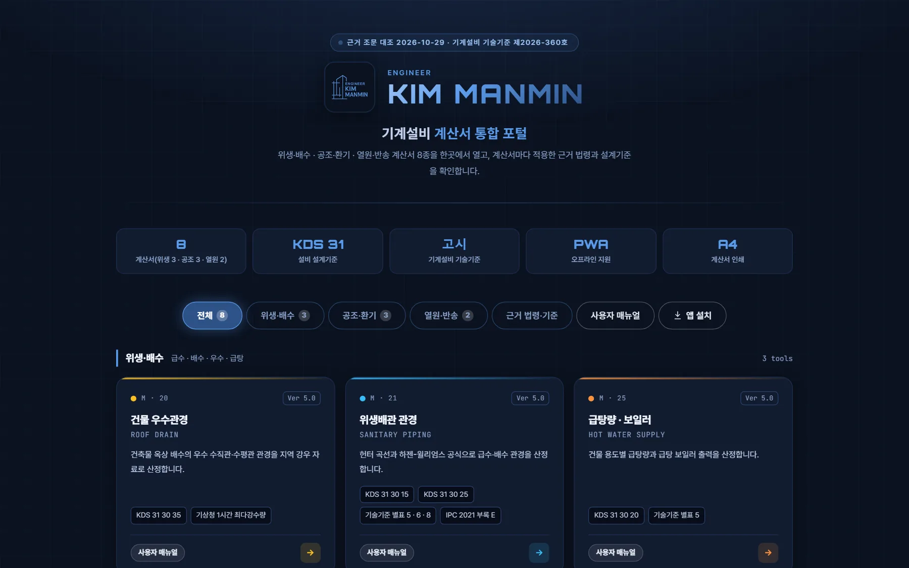
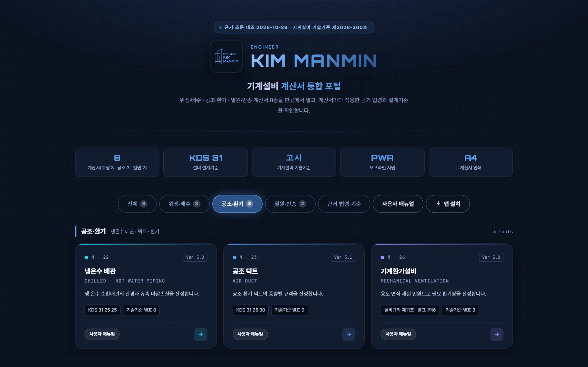
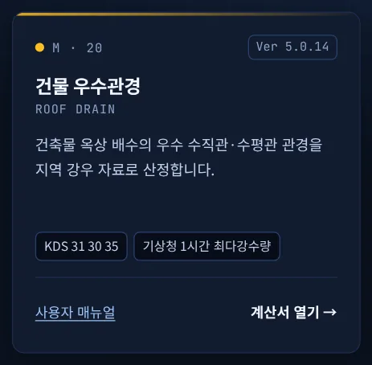
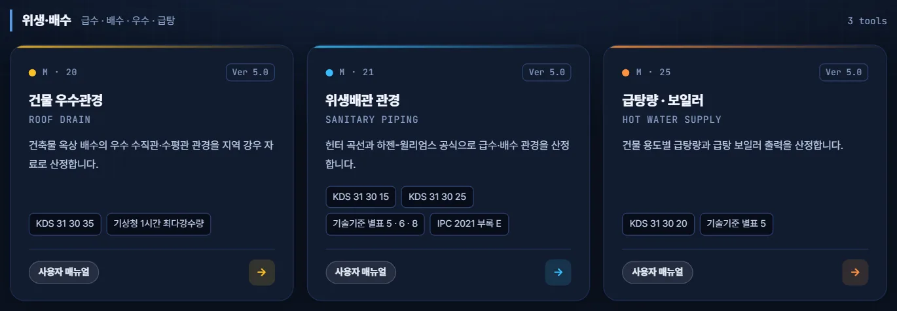
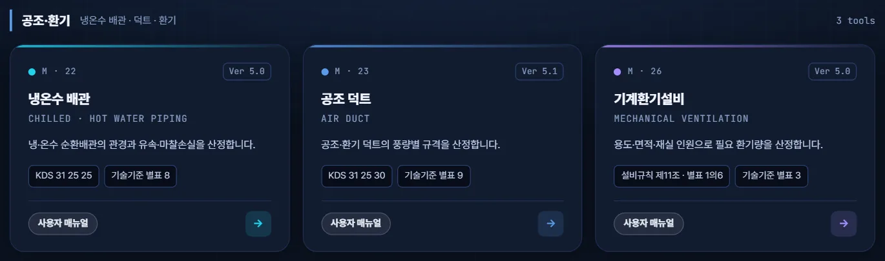
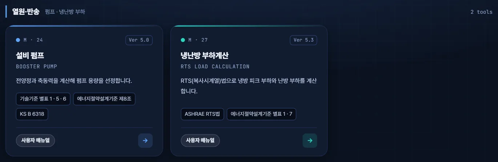
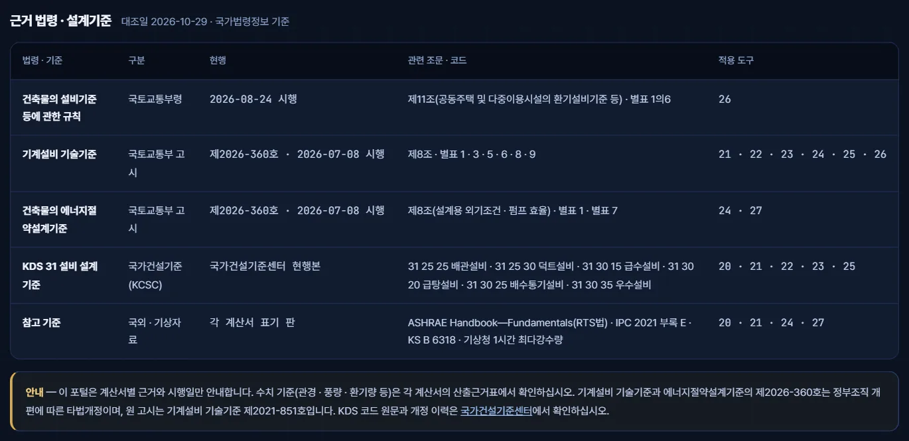
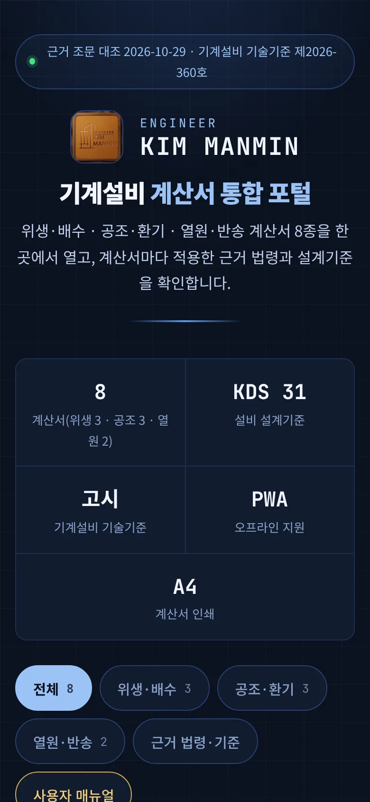
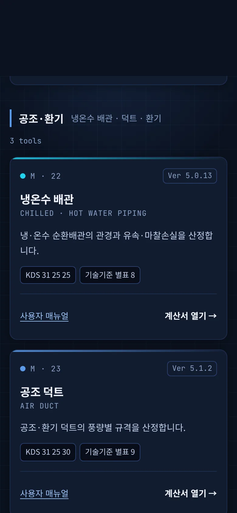
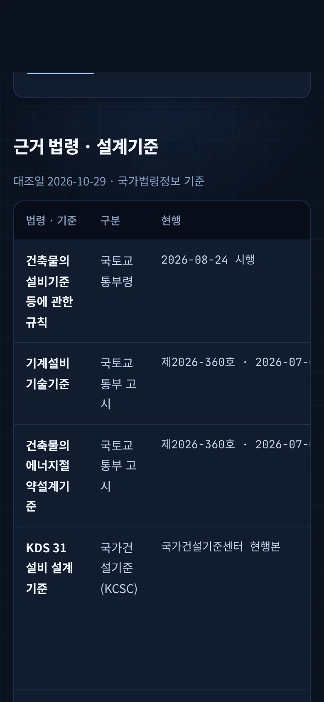

00이 매뉴얼에 대하여
기계설비 계산서 통합 포털은 건물 우수 · 위생배관 · 급탕 · 냉온수 배관 · 공조 덕트 · 기계환기 · 설비 펌프 · 냉난방 부하계산까지 MANMIN 기계설비 계산서 8종의 진입 화면입니다. 포털은 계산하지 않습니다. 카드를 눌러 계산서로 들어가고, 계산서마다 적용한 근거 법령과 설계기준을 한 화면에서 확인합니다.
| 항목 | 내용 |
|---|---|
| 대상 프로그램 | 기계설비 계산서 통합 포털 Ver 1.0.1 |
| 접속 주소 | manminkim-eng.github.io/mech-portal |
| 매뉴얼 판 | Ver-1.0 (초판) · 2026-10-30 · 작성 김만민 건축사(㈜대성건축사사무소) |
| 내려받기 | PDF(A4) · 포털 열기 |
| 근거 대조 | 국가법령정보(LawMCP) 2026-10-29 — 건축물의 설비기준 등에 관한 규칙 · 기계설비 기술기준 · 건축물의 에너지절약설계기준 |
| 범위 | 안내 · 연결 도구 — 수치 기준과 계산은 각 계산서에서 합니다 |
01한눈에 보기
설치 없이 브라우저에서 바로 열리는 단일 페이지(PWA)입니다. 입력값이 없고, 연결과 근거 안내만 합니다.
1-1. 화면 구성

12345- 1근거 조문 대조일 · 고시 번호
- 2포털 이름
- 3요약 5칸
- 4분류 탭 · 근거 · 매뉴얼
- 5계산서 카드
| 영역 | 내용 |
|---|---|
| 머리 | 근거 조문 대조일 · 기계설비 기술기준 고시 번호, 포털 이름, 설명 |
| 요약 5칸 | 계산서 8종(위생 3 · 공조 3 · 열원 2) · KDS 31 · 고시 · PWA · A4 |
| 탭 막대 | 전체 · 위생·배수 · 공조·환기 · 열원·반송 / 근거 법령·기준 / 사용자 매뉴얼 |
| 계산서 카드 | 카드를 누르면 계산서, 「사용자 매뉴얼」을 누르면 그 계산서의 매뉴얼(새 창) |
| 근거 법령 · 설계기준 | 법령 · 고시 · KDS · 참고 기준 5행 — 현행 번호 · 시행일 · 관련 조문 · 적용 도구 |
1-2. 연결 계산서 8종
| 분류 | 번호 | 계산서 | 버전 | 근거 기준 | 매뉴얼 |
|---|---|---|---|---|---|
| 위생·배수 | 20 | 건물 우수관경 | Ver 5.0.14 | KDS 31 30 35 · 기상청 1시간 최다강수량 | 매뉴얼 |
| 위생·배수 | 21 | 위생배관 관경 | Ver 5.0.12 | KDS 31 30 15 · KDS 31 30 25 · 기술기준 별표 5 · 6 · 8 · IPC 2021 부록 E | 매뉴얼 |
| 위생·배수 | 25 | 급탕량 · 보일러 | Ver 5.0.2 | KDS 31 30 20 · 기술기준 별표 5 | 매뉴얼 |
| 공조·환기 | 22 | 냉온수 배관 | Ver 5.0.13 | KDS 31 25 25 · 기술기준 별표 8 | 매뉴얼 |
| 공조·환기 | 23 | 공조 덕트 | Ver 5.1.2 | KDS 31 25 30 · 기술기준 별표 9 | 매뉴얼 |
| 공조·환기 | 26 | 기계환기설비 | Ver 5.0.11 | 설비규칙 제11조 · 별표 1의6 · 기술기준 별표 3 | 매뉴얼 |
| 열원·반송 | 24 | 설비 펌프 | Ver 5.0.3 | 기술기준 별표 1 · 5 · 6 · 에너지절약설계기준 제8조 · KS B 6318 | 매뉴얼 |
| 열원·반송 | 27 | 냉난방 부하계산 | Ver 5.3.2 | ASHRAE RTS법 · 에너지절약설계기준 별표 1 · 7 | 매뉴얼 |
021분 따라하기
예: 다중이용시설의 기계환기 풍량과 덕트 규격을 정하는 현장 — 포털에서 계산서를 찾아 들어가고 근거를 확인하는 순서입니다.
- ① 포털 열기manminkim-eng.github.io/mech-portal — 휴대전화는 「홈 화면에 추가」로 설치합니다.
- ② 분류「공조·환기」 탭을 누르면 냉온수 배관 · 공조 덕트 · 기계환기설비 카드 3장만 남습니다(3-2).
- ③ 근거 확인기계환기설비 카드의 칩 「설비규칙 제11조 · 별표 1의6」 「기술기준 별표 3」을 확인합니다(3-5).
- ④ 매뉴얼카드 아래 「사용자 매뉴얼」 — 그 계산서의 매뉴얼이 새 창으로 열립니다.
- ⑤ 계산서카드를 누르면 계산서로 이동해 환기량을 산정하고, 같은 방법으로 공조 덕트 계산서에서 덕트 규격을 정합니다.
- ⑥ 시행일 확인포털 아래 「근거 법령 · 설계기준」 표에서 현행 고시 번호와 시행일을 확인합니다(3-7).

12- 1공조·환기만 보기
- 2공조·환기 카드 3장
03화면별 기능
3-1. 머리
- 1근거 조문 대조일
- 2ENGINEER KIM MANMIN
- 3기계설비 계산서 통합 포털
- 4포털 설명
맨 위 표시줄은 근거 조문을 국가법령정보와 대조한 날짜(2026-10-29)와 기계설비 기술기준의 현행 고시 번호입니다.
3-2. 분류 탭
- 1전체 8
- 2위생·배수 3
- 3공조·환기 3
- 4열원·반송 2
- 5근거 법령·기준
- 6사용자 매뉴얼
「전체 8」 · 「위생·배수 3」 · 「공조·환기 3」 · 「열원·반송 2」는 누르면 해당 묶음만 보여 줍니다. 「근거 법령·기준」은 아래 근거표로 이동하고, 「사용자 매뉴얼」은 이 문서를 새 창으로 엽니다(온라인 전용).
3-3. 계산서 카드

1234567- 1공종 번호(M · 폴더 번호)
- 2계산서 현재 버전
- 3계산서 이름
- 4계산 내용
- 5근거 기준 칩
- 6사용자 매뉴얼(새 창)
- 7계산서 열기
카드 위 번호 「M · 20」은 홈페이지 도구 허브의 공종 표기(M)와 개발 폴더 번호(20)입니다. 버전은 계산서의 현재 판이고, 칩은 그 계산서가 산출근거로 인용하는 법령 · 설계기준입니다.
3-4. 위생·배수

123- 120 건물 우수관경
- 221 위생배관 관경
- 325 급탕량 · 보일러
3-5. 공조·환기

123- 122 냉온수 배관
- 223 공조 덕트
- 326 기계환기설비
3-6. 열원·반송

12- 124 설비 펌프
- 227 냉난방 부하계산
3-7. 근거 법령 · 설계기준

123456- 1설비규칙 — 2026-08-24 시행
- 2기계설비 기술기준 — 제2026-360호
- 3에너지절약설계기준 — 제2026-360호
- 4KDS 31 설비 설계기준
- 5참고 기준
- 6안내 — 수치 기준은 계산서
표 아래 안내문은 포털의 원칙(근거 · 시행일만 안내, 수치 기준은 계산서)과 고시 번호의 의미(4-2)를 적은 것입니다. KDS 원문과 개정 이력은 국가건설기준센터에서 확인합니다.
3-8. 휴대전화 화면



좁은 화면에서는 카드가 한 줄씩 쌓이고, 근거표는 좌우로 밀어서 봅니다.
04근거 해설
4-1. 근거 체계
| 법령 · 기준 | 구분 | 현행 | 관련 조문 · 코드 | 적용 도구 |
|---|---|---|---|---|
| 건축물의 설비기준 등에 관한 규칙 | 국토교통부령 | 2026-08-24 시행 | 제11조(공동주택 및 다중이용시설의 환기설비기준 등) · 별표 1의6 | 26 |
| 기계설비 기술기준 | 국토교통부 고시 | 제2026-360호 · 2026-07-08 시행 | 제8조 · 별표 1 · 3 · 5 · 6 · 8 · 9 | 21 · 22 · 23 · 24 · 25 · 26 |
| 건축물의 에너지절약설계기준 | 국토교통부 고시 | 제2026-360호 · 2026-07-08 시행 | 제8조(설계용 외기조건 · 펌프 효율) · 별표 1 · 별표 7 | 24 · 27 |
| KDS 31 설비 설계기준 | 국가건설기준(KCSC) | 국가건설기준센터 현행본 | 31 25 25 배관설비 · 31 25 30 덕트설비 · 31 30 15 급수설비 · 31 30 20 급탕설비 · 31 30 25 배수통기설비 · 31 30 35 우수설비 | 20 · 21 · 22 · 23 · 25 |
| 참고 기준 | 국외 · 기상자료 | 각 계산서 표기 판 | ASHRAE Handbook—Fundamentals(RTS법) · IPC 2021 부록 E · KS B 6318 · 기상청 1시간 최다강수량 | 20 · 21 · 24 · 27 |
4-2. 고시 번호 읽는 법
기계설비 기술기준과 건축물의 에너지절약설계기준의 현행 번호 국토교통부고시 제2026-360호(2026-07-08 시행)는 정부조직 개편 사항을 반영한 57개 고시 일괄 개정(타법개정)입니다. 기계설비 기술기준의 원 고시는 제2021-851호(2021-06-07 발령)이며, 계산서에 이 번호로 적힌 근거는 같은 고시를 가리킵니다.
4-3. 포털과 계산서의 역할
| 구분 | 역할 |
|---|---|
| 포털 | 계산서 진입 · 분류 · 근거 법령과 시행일 · 고시 번호 안내 — 수치 기준을 싣지 않습니다 |
| 계산서 | 입력 · 계산 · 판정 · 산출근거표 · A4 계산서 — 수치 기준과 조항은 계산서가 정본입니다 |
| 갱신 | 법령이 바뀌면 계산서를 먼저 고치고, 포털 근거표는 번호 · 시행일만 고칩니다(데이터 단일 원천 _tools/build_portal.py) |
05문제 해결·FAQ
| 증상 | 해결 |
|---|---|
| 포털에서 계산이 되나요 | 아닙니다 — 카드를 눌러 각 계산서에서 계산합니다 |
| 「사용자 매뉴얼」이 안 열려요 | 매뉴얼은 온라인 전용입니다(오프라인 캐시에서 제외) |
| 수치 기준은 어디 있나요 | 각 계산서의 산출근거표와 A4 계산서에 있습니다 |
| 계산서마다 디자인이 달라요 | 계산서는 각각 별도 저장소의 도구라 헤드 색과 판이 다를 수 있습니다 |
| 화면이 예전 판이에요 | 새로 고침(Ctrl+F5) 또는 앱을 닫았다 다시 여십시오 — 판이 바뀌면 캐시 이름이 바뀝니다 |
부록
A1. 버전 변경 내역
| 버전 | 내용 |
|---|---|
| Ver 1.0.1 · 매뉴얼 Ver-1.0 (2026-10-30) | 사용자 매뉴얼 신설 · 탭 막대 「사용자 매뉴얼」 연결 · sw v1.0.1 |
| Ver 1.0.0 (2026-10-29) | 신설 — 계산서 8종 · 분류 3 · 근거 법령 · 설계기준표 |
A2. 용어
| 용어 | 뜻 |
|---|---|
| 기계설비 기술기준 | 「기계설비법」 제14조에 따른 국토교통부 고시 — 설계 · 시공 기준(별표 1~15) |
| KDS 31 | 국가건설기준 설비 설계기준(KDS 31 25 · 31 30 등) |
| 타법개정 | 다른 법령 · 고시의 개정에 따라 함께 고쳐진 개정 — 내용 개정과 구분 |
| PWA | 홈 화면에 설치해 오프라인에서도 여는 웹앱 |